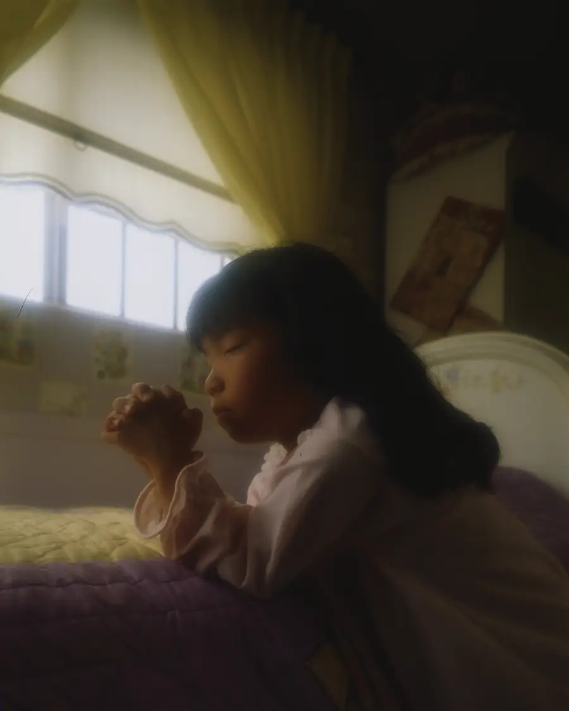
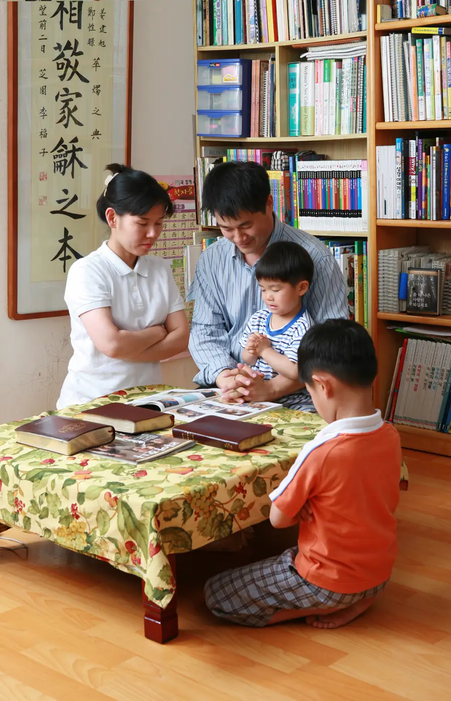

Fale com Deus. Ele ouve-o e quer responder às suas perguntas.
A oração é a forma como nos comunicamos com Deus, nosso Pai Celestial. Não é um ritual complicado nem exige palavras especiais — é simplesmente falar com Ele como falaria com um pai amoroso que o conhece e se preocupa consigo.
Deus quer saber de si. Quer ouvir as suas alegrias, as suas preocupações, as suas perguntas e os seus agradecimentos. E o mais importante: Ele responde.

Não existe uma forma errada de orar se o fizer com sinceridade. No entanto, Jesus Cristo ensinou-nos um modelo simples:
Sim. Deus responde às orações, embora nem sempre da forma que esperamos. Por vezes a resposta chega como um sentimento de paz, uma ideia clara, as palavras de outra pessoa ou uma porta que se abre (ou se fecha) na sua vida.
Aprender a reconhecer as respostas de Deus faz parte do caminho da fé. Convidamo-lo a experimentar — ore com sinceridade e observe o que acontece no seu coração.

Milhões de pessoas em todo o mundo experimentaram o poder da oração. Não é magia — é uma relação real com um Deus real que o ama. A oração dá-lhe força, direção e paz no meio das tempestades da vida.
Se nunca orou ou se quer aprofundar a sua relação com Deus, estamos aqui para ajudar.
Contacte-nos